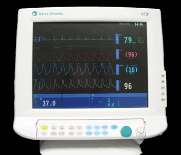
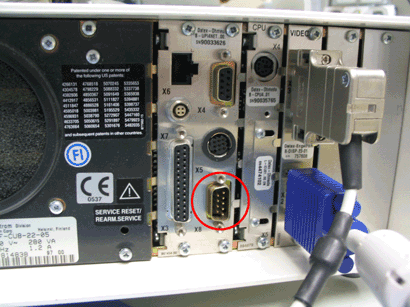

Supported devices:Datex Ohmeda AS/3, CS/3, CS/3 Compact, S/5, Cardiocap 5
Release 1.10.0.0
Document reference: 1a
Known issues:
The driver supports the RS232 connection.

The device requires a standard null modem serial cable with the following pin layout:
| PC |
Patient Monitor |
||||
| female DB9 |
DB25 |
CMS (male DB9) |
|||
TxD |
3 |
2 |
RxD |
2 |
|
RxD |
2 |
3 |
TxD |
3 |
|
GND |
5 |
7 |
GND |
5 |
|
RTS |
7 |
4 |
CTS |
8 |
|
CTS |
8 |
5 |
RTS |
7 |
|
Only the following settings are supported
| Baud rate | 19200 |
| Parity | Even |
| Data bits | 8 |
| Stop bits | 1 |
| Flow control | CTS/RTS |
The following waveforms are supported. For all waveforms, the primaryid is 111:889::, with the subid being a value from the following table. To start a waveform make a request with the value CM_START. To stop waveform transmission, send the same request with the value CM_STOP (see SDK manual for full details).
The Datex Ohmeda can support a maximum of 600 samples per second, which can be made from any number of the following waveforms. Requests for waveforms once this limit has been reached will be ignored. For example, 1 ECG channel and 3 Invasive blood pressure channels will fulfill this maximum requirement, and no further waveforms can be requested.
| Subid | Channels | Samples per s | Description |
|---|---|---|---|
| 101:434-667:203:263 | channel1, channel2, channel3 | 300 | ECG µV |
| 99:346-360:169:263" | channel1, channel2, channel3, channel4, channel5, channel6 | 100 | Invasive blood pressure x mmHg |
| 101:371:224-226:263 | 100 | Plethysmograph modulation | |
| 79::177-197:259 | 25 | CO2 concentration | |
| 79::197-219:259 | 25 | O2 concentration | |
| 79::197-216:259 | 25 | N2O concentration | |
| 79::197-849:259 | 25 | Anesthesia agent | |
| 99::197:259 | 25 | Airway pressure cmH2O | |
| 84::197:261 | 25 | Airway flow l/min | |
| 101:455:173:261 | 25 | Airway volume ml | |
| 83::181:262" | channel1, channel2, channel3, channel4 | 25 | ECG Respiration, µV |
| 112::211-244:261 | 100 | EEG | |
| 87:513:176-848:262 | 25 | Tonometry catheter pressure mbar | |
| 99:494:177-307-1088:1060 | 100 | Entropy µV | |
| 83:343:181-1086:262 | 300 | BIS µV |
| ID | Sources | Acronym | Common Term | Description | |
| Primary | 79:331-660:224:502 | SpO2 | SpO2 | Peripheral oxygen saturation measurements | |
| Sub | |||||
| Primary | 101:371:224-226:263 | SpO2 PR | Pulse rate measured by SpO2 sensor | Noninvasive pulse rate measured by SpO2 sensor | |
| Sub | |||||
| Primary | 79:331-660:302:502 | SaO2 | None | arterial oxygen saturation | |
| Sub | |||||
| Primary | 79:331-660:314:502 | SvO2 | SvO2 | Venous oxygen saturation | |
| Sub | |||||
| Primary | 109::855:260 | Tskin | Skin Temperature | Skin temperature | |
| Sub | |||||
| Primary | 109::180:260 | Tcore | Core Temperature | Core temperature | |
| Sub | |||||
| Primary | 109::228:260 | KKT | Rectal temperature | Rectal temperature | |
| Sub | |||||
| Primary | 109::164:260 | Tairway | Temperature airway | Temperature airway | |
| Sub | |||||
| Primary | 109:::260 | T1, T2, T3, T4 | T | Temperature | Temperature - unspecified measurement of patient |
| Sub | |||||
| Primary | 109::856:260 | Nasopharyngeal temperature | Nasopharyngeal temperature | ||
| Sub | |||||
| Primary | 109::191:260 | Esophagus temperature | Esophagus temperature | ||
| Sub | |||||
| Primary | 109:137:242:260 | Mean surface temperature | Mean value of temperature measurements on defined body surface locations | ||
| Sub | |||||
| Primary | 99:346-371-671:169:263 | NIBP (dia) | Discontinuous, Noninvasive Diastolic Blood Pressure | Pressure of the blood at the diastolic phase, measured discontinuously and noninvasively (cuff) | |
| Sub | |||||
| Primary | 99:346-371-712:169:263 | NIBP (sys) | Discontinuous, Noninvasive Systolic Blood Pressure | Pressure of the blood at the systolic phase, measured discontinuously and noninvasively (cuff) | |
| Sub | |||||
| Primary | 99:137-346-371:169:263 | NIBP (mean) | Discontinuous, Noninvasive Mean Blood Pressure | Pressure of the blood computed as mean value between systolic and diastolic Pressures, measured discontinuously and noninvasively (cuff) | |
| Sub | |||||
| Primary | 99:346-360-712:169:263 | channel1, channel2, channel3, channel4, channel5, channel6 | IBP(sys) | Invasive blood pressure systolic | |
| Sub | |||||
| Primary | 101:434-667:203:263 | Monitor, Mortara | HR | Heart rate (ECG) | Heart rate measured from ECG |
| Sub | |||||
| Primary | 81:424-710:203:263 | channel1, channel2, channel3 | STaVR | ST aVR | Duration of the ST segment of ECG in lead aVR |
| Sub | |||||
| Primary | 81:423-710:203:263 | channel1, channel2, channel3 | STaVL | ST lead aVL | Duration of the ST segment of ECG in lead aVL |
| Sub | |||||
| Primary | 81:422-710:203:263 | channel1, channel2, channel3 | STaVF | ST lead aVF | Duration of the ST segment of ECG in lead aVF |
| Sub | |||||
| Primary | 81:446-710:203:263 | channel1, channel2, channel3 | STII | ST lead II | Duration of the ST segment of ECG in lead II |
| Sub | |||||
| Primary | 81:447-710:203:263 | channel1, channel2, channel3 | STIII | ST lead III | Duration of the ST segment of ECG in lead III |
| Sub | |||||
| Primary | 81:445-710:203:263 | channel1, channel2, channel3 | STI | ST lead I | Duration of the ST segment of ECG in lead I |
| Sub | |||||
| Primary | 83:710-962:203:263 | channel1, channel2, channel3 | ST amplitude in lead V | ST amplitude in lead V | |
| Sub | |||||
| Primary | 99:137:169:263-498 | MAP | Mean Arterial Pressure | Mean Pressure of the blood in an artery | |
| Sub | |||||
| Primary | 99:712:169:263-498 | SAP | Systolic Arterial Pressure | Systolic Pressure of the blood in an artery | |
| Sub | |||||
| Primary | 99:671:169:263-498 | Diastolic Arterial Pressure | Diastolic Pressure of the blood in an artery | ||
| Sub | |||||
| Primary | 99:671:169:263-504 | Diastolic Central Venous Pressure | Diastolic Pressure of the blood in the thoracic venae cavae | ||
| Sub | |||||
| Primary | 99:712:169:263-504 | Systolic Central Venous Pressure | Systolic Pressure of the blood in the thoracic venae cavae | ||
| Sub | |||||
| Primary | 99:137:169:263-504 | Mean Central Venous Pressure | Mean Pressure of the blood in the thoracic venae cavae | ||
| Sub | |||||
| Primary | 99:712:169:263-534 | Systolic Pulmonary Arterial Pressure | Systolic Pressure of the blood in the pulmonary artery | ||
| Sub | |||||
| Primary | 99:671:169:263-534 | Diastolic Pulmonary Arterial Pressure | Diastolic Pressure of the blood in the pulmonary artery | ||
| Sub | |||||
| Primary | 99:137:169:263-534 | Mean Pulmonary Arterial Pressure | Mean Pressure of the blood in the Pulmonary artery | ||
| Sub | |||||
| Primary | 99:712:169:263-538 | Systolic Right Atrial Pressure | Systolic Pressure of the blood in the right atrium of the heart | ||
| Sub | |||||
| Primary | 99:671:169:263-538 | Diastolic Right Atrial Pressure | Diastolic Pressure of the blood in the right atrium of the heart | ||
| Sub | |||||
| Primary | 99:137:169:263-538 | Mean Right Atrial Pressure | Mean Pressure of the blood in the right atrium of the heart | ||
| Sub | |||||
| Primary | 99:712:169:263-541 | Systolic Right Ventricular Pressure | Systolic Pressure of the blood in the right ventricle of the heart | ||
| Sub | |||||
| Primary | 99:671:169:263-541 | Diastolic Right Ventricular Pressure | Diastolic Pressure of the blood in the right ventricle of the heart | ||
| Sub | |||||
| Primary | 99:137:169:263-541 | Mean Right Ventricular Pressure | Mean Pressure of the blood in the right ventricle of the heart | ||
| Sub | |||||
| Primary | 99:712:169:263-523 | Systolic Left Atrial Pressure | Systolic Pressure of the blood in the left atrium of the heart | ||
| Sub | |||||
| Primary | 99:671:169:263-523 | Diastolic Left Atrial Pressure | Diastolic Pressure of the blood in the left atrium of the heart | ||
| Sub | |||||
| Primary | 99:137:169:263-523 | Mean Left Atrial Pressure | Mean Pressure of the blood in the left atrium of the heart | ||
| Sub | |||||
| Primary | 99:712:202-206:262 | ICPS | Systolic Intracranial Pressure | Maximum Pressure inside skull, caused by filling of vessels during systolic phase of blood pressure | |
| Sub | |||||
| Primary | 99:671:202-206:262 | ICPD | Diastolic Intracranial Pressure | Minimum Pressure inside skull, caused by emptying of vessels during diastolic phase of blood pressure | |
| Sub | |||||
| Primary | 99:137:202-206:262 | ICPM | Mean Intracranial Pressure | Mean Pressure inside skull | |
| Sub | |||||
| Primary | 99:712:169:263-496 | Systolic Aortic Pressure | Systolic Pressure of the blood in the aorta | ||
| Sub | |||||
| Primary | 99:671:169:263-496 | Diastolic Aortic Pressure | Diastolic Pressure of the blood in the aorta | ||
| Sub | |||||
| Primary | 99:137:169:263-496 | Mean Aortic Pressure | Mean Pressure of the blood in the aorta | ||
| Sub | |||||
| Primary | 79:676:177-197:259 | %CO2 ET | Concentration Airway CO2 EndTidal | Concentration of CO2 in airway gas measured at the end of expiration | |
| Sub | |||||
| Primary | 79:679:177-197:259 | Any, FICO2, FIO2 | %CO2 ins | Concentration Airway CO2 Inspiratory | Concentration of CO2 in airway gas measured in inspiration |
| Sub | |||||
| Primary | 99:346-360-671:169:263 | channel1, channel2, channel3, channel4, channel5, channel6 | IBP(dia) | Invasive blood pressure diastolic | |
| Sub | |||||
| Primary | 99:137-346-360:169:263 | channel1, channel2, channel3, channel4, channel5, channel6 | IBP(mean) | Invasive blood pressure mean | |
| Sub | |||||
| Primary | 101:432:173:261 | RR (interval) | Respiration Rate | Rate of breathing, method: CO2 -sensor | |
| Sub | |||||
| Primary | 79:679:197-219:259 | %O2 ins | Concentration Airway O2 Inspiratory | Concentration of O2 in airway gas measured in inspiration | |
| Sub | |||||
| Primary | 79:676:197-219:259 | %O2 ET | Concentration Airway O2 EndTidal | Concentration of O2 in airway gas measured at the end of expiration | |
| Sub | |||||
| Primary | 79:676:197-216:259 | Concentration Airway Nitrous Oxide EndTidal | Concentration of Nitrous Oxide in airway gas measured at the end of expiration | ||
| Sub | |||||
| Primary | 79:679:197-216:259 | Concentration Airway Nitrous Oxide Inspiratory | Concentration of Nitrous Oxide in airway gas measured in inspiration | ||
| Sub | |||||
| Primary | 79:679:189-197:259 | Concentration Airway Enflurane Inspiratory | Concentration of Enflurane in airway gas measured in inspiration | ||
| Sub | |||||
| Primary | 79:679:197-201:259 | Concentration Airway Halothane Inspiratory | Concentration of Halothane in airway gas measured in inspiration | ||
| Sub | |||||
| Primary | 79:679:184-197:259 | Concentration Airway Desflurane Inspiratory | Concentration of Desflurane in airway gas measured in inspiration | ||
| Sub | |||||
| Primary | 79:676:184-197:259 | Concentration Airway Desflurane EndTidal | Concentration of Desflurane in airway gas measured at the end of expiration | ||
| Sub | |||||
| Primary | 79:679:197-207:259 | Concentration Airway Isoflurane Inspiratory | Concentration of Isoflurane in airway gas measured in inspiration | ||
| Sub | |||||
| Primary | 79:676:189-197:259 | Concentration Airway Enflurane EndTidal | Concentration of Enflurane in airway gas measured at the end of expiration | ||
| Sub | |||||
| Primary | 79:679:197-236:259 | Concentration Airway Sevoflurane Inspiratory | Concentration of Sevoflurane in airway gas measured in inspiration | ||
| Sub | |||||
| Primary | 79:676:197-201:259 | Concentration Airway Halothane EndTidal | Concentration of Halothane in airway gas measured at the end of expiration | ||
| Sub | |||||
| Primary | 79:676:197-207:259 | Concentration Airway Isoflurane EndTidal | Concentration of Isoflurane in airway gas measured at the end of expiration | ||
| Sub | |||||
| Primary | 79:676:197-236:259 | Concentration Airway Sevoflurane EndTidal | Concentration of Sevoflurane in airway gas measured at the end of expiration | ||
| Sub | |||||
| Primary | 79:679:197-849:259 | %Agt In | Concentration Airway anaesthetic agent Inspiratory | Concentration Airway anaesthetic agent in inspiration | |
| Sub | |||||
| Primary | 79:676:197-849:259 | %Agt ET | Concentration Airway Anaesthetic agent EndTidal | Concentration of anaesthetic agent in airway gas measured at the end of expiration | |
| Sub | |||||
| Primary | 99:359-674:197:259 | PEEP | Intrinsic positive end expiratory pressure (Auto PEEP) | Physiologically generated positive airway pressure | |
| Sub | |||||
| Primary | 78::166:264 | C TH+L | Compliance of respiratory system | Change of tidal volume per unit change of airway pressure | |
| Sub | |||||
| Primary | 99:692:197:259 | Plateau Respir. Pressure | Pressure in airway in plateau phase during mechanical ventilation. | ||
| Sub | |||||
| Primary | 101:455:173:261 | RR (interval) | Respiration Rate | Rate of breathing, method not specified | |
| Sub | |||||
| Primary | 99:133:197:271 | PAW max | Maximum Ventilation Pressure | Maximum pressure of gas in airway during mechanical ventilation. | |
| Sub | |||||
| Primary | 112:679:211-244:261 | VTI | Inspired tidal volume | Volume of gas inspired during each breath | |
| Sub | |||||
| Primary | 112:677:211-244:261 | VTE | Expired tidal volume | Volume of gas expired during each breath | |
| Sub | |||||
| Primary | 84:609-677:197:261 | E | Expiratory Respir. Minute Volume | Total volume of gas breathed out in one minute during spontaneous respiration. | |
| Sub | |||||
| Primary | 112:691:169:263-526 | CO | Cardiac output | Quantity of blood pumped by the left ventricle into the aorta per minute | |
| Sub | |||||
| Primary | 109::169:260 | T | Blood temperature | Blood temperature | |
| Sub | |||||
| Primary | 99:396:169:263-534 | PAW | Pulmonary Artery Wedge Pressure | Pressure of the blood measured by a catheter wedged into a small branch of the pulmonary artery | |
| Sub | |||||
| Primary | 81:434-704:203:263 | RR (interval) | R-R interval | Duration of the interval between two consecutive QRS complexes | |
| Sub | |||||
| Primary | 97:192-281-479-615:203-664:263 | Premature ventricular contractions | Premature ventricular contractions | ||
| Sub | |||||
| Primary | 81:466-710:203:263 | STV1 | ST lead V1 | Duration of the ST segment of ECG in lead V1 | |
| Sub | |||||
| Primary | 81:467-710:203:263 | STV2 | ST lead V2 | Duration of the ST segment of ECG in lead V2 | |
| Sub | |||||
| Primary | 81:469-710:203:263 | STV3 | ST lead V3 | Duration of the ST segment of ECG in lead V3 | |
| Sub | |||||
| Primary | 81:471-710:203:263 | STV4 | ST lead V4 | Duration of the ST segment of ECG in lead V4 | |
| Sub | |||||
| Primary | 81:473-710:203:263 | STV5 | ST lead V5 | Duration of the ST segment of ECG in lead V5 | |
| Sub | |||||
| Primary | 81:475-710:203:263 | STV6 | ST lead V6 | Duration of the ST segment of ECG in lead V6 | |
| Sub | |||||
| Primary | 87:513:176-848:262 | BIS | Bispectral index | Bispectral index, an electroencephalogram derived multivariant scale that reflects the level of hypnosis in anesthetized patients. | |
| Sub | |||||
| Primary | 87:513:852-853:262 | SQI | Signal Quality Index | Signal Quality Index - indicator of quality of Bispectral index calculation | |
| Sub | |||||
| Primary | 83::215:265 | EMG | Electromyogram | Electrical Potential from muscle derived bipolarly between electrode position 1 and 2 on skin surface or inside muscle. | |
| Sub | |||||
| Primary | 102:12-513::262 | BSR | Burst Suppression Ratio | Burst suppression ratio - the time the EEG voltage is in the suppressed state as a fraction of the sampling period. | |
| Sub | |||||
| Primary | 112:691:179:263-501 | VO2 | Oxygen Consumption | Oxygen consumption of the body | |
| Sub | |||||
| Primary | 84:609-677:177-197:261 | VCO2 | Expired CO2 minute volume | Total volume of CO2 breathed out in one minute. | |
| Sub | |||||
| Primary | 102:515-516:197:269 | RQ | Respiratory Quotient | Ratio of CO2 expired to O2 used | |
| Sub | |||||
| Primary | 99:336-674:197:271 | PEEP | Positive end expiratory pressure, applied | Positive End Expiratory Pressure applied to the airway during mechanical ventilation | |
| Sub | |||||
| Primary | 99:137-679:197:259 | PI mean | Mean Inspiratory Airway Pressure | Mean pressure of gas in airway during inspiration | |
| Sub | |||||
| Primary | 103::164:261 | RAW | Respir. Resistance | Resistance to gas flow within the airway | |
| Sub | |||||
| Primary | 84:609-679:197:271 | I | Ventilation Inspiratory Minute Volume | Total volume of gas breathed in one minute during mechanical ventilation. | |
| Sub | |||||
| Primary | 102:1066-1067:197:261 | I:E | Inspiratory Expiratory ratio | Ratio between Inspiratory Expiratory flow | |
| Sub | |||||
| Primary | 78:390:166-225:264 | C L | Lung Compliance, static | Change of tidal volume per unit change in oesophageal pressure measured statically at expiration end | |
| Sub | |||||
| Primary | 111:889:: | Waveform | Waveform measurement | ||
| Sub | 79::177-197:259 | %CO2 | Concentration Airway CO2 | Concentration of CO2 in airway gas | |
| Primary | 111:889:: | Waveform | Waveform measurement | ||
| Sub | 79::197-219:259 | %O2 | Concentration Airway O2 | Concentration of O2 in airway gas | |
| Primary | 111:889:: | Waveform | Waveform measurement | ||
| Sub | 79::197-216:259 | %Nitrous Oxide | Concentration Airway N2O | Concentration of Nitrous Oxide in airway gas | |
| Primary | 111:889:: | Waveform | Waveform measurement | ||
| Sub | 79::197-849:259 | %Agt | Concentration Airway anaesthetic agent | Concentration of anaesthetic agent in airway gas | |
| Primary | 111:889:: | Waveform | Waveform measurement | ||
| Sub | 99::197:259 | PAW | Respir. Airway Pressure | pressure of gas in airway | |
| Primary | 111:889:: | Waveform | Waveform measurement | ||
| Sub | 84::197:261 | Airway Flow | Gas flow in airway during spontaneous respiration | ||
| Primary | 111:889:: | channel1, channel2, channel3, channel4 | Waveform | Waveform measurement | |
| Sub | 83::181:262 | EEG | Electroencephalogram | Electrical potential derived bipolarly between two electrodes, position 1 and 2 at head surface. | |
| Primary | 111:889:: | Waveform | Waveform measurement | ||
| Sub | 112::211-244:261 | VT | Respiration Tidal Volume | Volume of gas during each breath | |
| Primary | 111:889:: | Waveform | Waveform measurement | ||
| Sub | 87:513:176-848:262 | BIS | Bispectral index | Bispectral index, an electroencephalogram derived multivariant scale that reflects the level of hypnosis in anesthetized patients. | |
| Primary | 101:377:226:263-501 | PRpl | Pulse Rate | Rate of blood pulse as obtained by plethysmography | |
| Sub | |||||
| Primary | 111:889:: | Waveform | Waveform measurement | ||
| Sub | 101:371:224-226:263 | SpO2 PR | Pulse rate measured by SpO2 sensor | Noninvasive pulse rate measured by SpO2 sensor | |
| Primary | 111:889:: | channel1, channel2, channel3 | Waveform | Waveform measurement | |
| Sub | 101:434-667:203:263 | HR | Heart rate (ECG) | Heart rate measured from ECG | |
| Primary | 111:889:: | Waveform | Waveform measurement | ||
| Sub | 101:455:173:261 | RR (interval) | Respiration Rate | Rate of breathing, method not specified | |
| Primary | 111:889:: | channel1, channel2, channel3, channel4, channel5, channel6 | Waveform | Waveform measurement | |
| Sub | 99:346-360:169:263 | IBP | Invasive Blood Pressure | Invasive blood pressure | |
| Primary | 101:360:169-226:263 | HR (IBP) | Heart rate from invasive blood pressure | Heart rate measured by invasive blood pressure probe | |
| Sub | |||||
| Primary | 101:393:173:261 | RR (interval) | Respiration Rate | Rate of breathing, method: transthoracic impedance | |
| Sub | |||||
| Primary | 101:371:169-226:263 | HR (NIBP) | Heart rate from noninvasive blood pressure | Heart rate measured during noninvasive blood pressure measurement (i.e. cuff) | |
| Sub | |||||
| Primary | 109::1082:260 | Tbladder | Temperature of bladder | Bladder temperature | |
| Sub | |||||
| Primary | 79:144:165-849:259 | MAC | Total Minimum Alveolar Concentration | Total Minimum Alveolar Anesthetic Concentration over breathing cycle | |
| Sub | |||||
| Primary | 79:144:165-189:259 | MAC (Enflurane) | Total Minimum Alveolar Concentration for Enflurane | Total Minimum Alveolar Enflurane Concentration over breathing cycle | |
| Sub | |||||
| Primary | 79:144:165-201:259 | MAC (halothane) | Total Minimum Alveolar Concentration for Halothane | Total Minimum Alveolar Halothane Concentration over breathing cycle | |
| Sub | |||||
| Primary | 79:144:165-207:259 | MAC (Isoflurane) | Total Minimum Alveolar Concentration for Halothane | Total Minimum Alveolar Isoflurane Concentration over breathing cycle | |
| Sub | |||||
| Primary | 79:144:165-184:259 | MAC (Desflurane) | Total Minimum Alveolar Concentration for Desflurane | Total Minimum Alveolar Desflurane Concentration over breathing cycle | |
| Sub | |||||
| Primary | 79:144:165-236:259 | MAC (Sevoflurane) | Total Minimum Alveolar Concentration for Sevoflurane | Total Minimum Alveolar Sevoflurane Concentration over breathing cycle | |
| Sub | |||||
| Primary | 102:688:169:263-541 | RVEF | Right Ventricular Ejection Fraction | Fraction of blood ejected from right venticle each beat | |
| Sub | |||||
| Primary | 101:144-434-667:203:263 | HRmin | Minimum Heart Rate (ECG) | Minimum heart rate measured from ECG | |
| Sub | |||||
| Primary | 101:133-434-667:203:263 | HRmax | Maximum Heart Rate (ECG) | Maximum heart rate measured from ECG | |
| Sub | |||||
| Primary | 85:146-155-513:181:262 | Spectral Edge Frequency of Electroencephalogram | Spectral edge frequency of Power spectrum of Electroencephalogram measured between two electrodes, position 1 and 2 at head surface. | ||
| Sub | |||||
| Primary | 98:117-146-150-513:181:262 | Relative Power of delta band of Electroencephalogram | Relative power of delta band of Power spectrum of Electroencephalogram measured between two electrodes, position 1 and 2 at head surface. | ||
| Sub | |||||
| Primary | 98:146-150-161-513:181:262 | Relative Power of theta band of Electroencephalogram | Relative power of theta band of Power spectrum of Electroencephalogram measured between two electrodes, position 1 and 2 at head surface. | ||
| Sub | |||||
| Primary | 98:115-146-150-513:181:262 | Relative Power of alpha band of Electroencephalogram | Relative power of alpha band of Power spectrum of Electroencephalogram measured between two electrodes, position 1 and 2 at head surface. | ||
| Sub | |||||
| Primary | 98:116-146-150-513:181:262 | Relative Power of beta band of Electroencephalogram | Relative power of beta band of Power spectrum of Electroencephalogram measured between two electrodes, position 1 and 2 at head surface. | ||
| Sub | |||||
| Primary | 85:143-146-513:181:262 | Median Power Frequency of Electroencephalogram | Median Power frequency of Power spectrum of Electroencephalogram measured between two electrodes, position 1 and 2 at head surface. | ||
| Sub | |||||
| Primary | 109::410:260 | T | Ear temperature | Ear temperature | |
| Sub | |||||
| Primary | 109::1083:260 | Taxil | Axillary Temperature | Axillary temperature (underarm temperature) | |
| Sub | |||||
| Primary | 109::203-215:260 | Tmyo | Myocardial Temperature | Myocardial temperature | |
| Sub | |||||
| Primary | 102:349-1084:215-240:265 | TOF twitch | NMT response for train of four mode | ||
| Sub | |||||
| Primary | 102:349:215-240:265 | t ratio | NMT ratio | ratio of NMT response (t4/t1 for train of four mode, t2/t1 for double burst mode). | |
| Sub | |||||
| Primary | 81:349-1084:215-240:265 | NMT pulse duration | Duration of NMT stimulation pulse | ||
| Sub | |||||
| Primary | 83:351:215:265 | fEMG | Frontal EMG | Electrical Potential from muscle derived bipolarly between electrode position 1 and 2 on facial skin surface. | |
| Sub | |||||
| Primary | 98:513-1085:181:265 | EEG RMS amplitude | RMS amplitude of EEG | ||
| Sub | |||||
| Primary | 83:343:181-1086:262 | SE | State Entropy | Spectral entropy of the pure EEG signal | |
| Sub | |||||
| Primary | 83:343:215-1086:265 | RE | Response Entropy | Spectral entropy of the combined EEG-FEMG signal | |
| Sub | |||||
| Primary | 102:12-343-513:1086:262 | Entropy burst suppression ratio | Entropy burst suppression ratio | ||
| Sub | |||||
| Primary | 81:677:197:259 | Expiration duration | Duration of expiration phase | ||
| Sub | |||||
| Primary | 81:679:197:259 | Inspiration duration | Duration of inspiration phase | ||
| Sub | |||||
| Primary | 99:390-692:197:259 | Static Plateau Respir. Pressure | Pressure in airway in plateau phase during mechanical ventilation measured statically | ||
| Sub | |||||
| Primary | 99:336-390-674:197:271 | Static positive end expiratory pressure, applied | Positive End Expiratory Pressure applied to the airway during mechanical ventilation, measured statically | ||
| Sub | |||||
| Primary | 99:359-390-674:197:259 | Static intrinsic positive end expiratory pressure (Auto PEEP) | Physiologically generated positive airway pressure, measured statically | ||
| Sub | |||||
| Primary | 79:679:1087:271 | Inspired balance gas | Inspiratory concentration of balance gas | ||
| Sub | |||||
| Primary | 79:677:1087:271 | Expired balance gas | Expiratory concentration of balance gas | ||
| Sub | |||||
| Primary | 111:889:: | Waveform | Waveform measurement | ||
| Sub | 83:343:181-1086:262 | SE | State Entropy | Spectral entropy of the pure EEG signal | |
| Primary | 79:494:307-1088:520 | pHi | Gastric intramucosal pH | Gastric intramucosal pH | |
| Sub | |||||
| Primary | 99:494:307-1088:520 | pgCO2 | pgCO2 | gastric mucosal partial pressure of carbon dioxide | |
| Sub | |||||
| Primary | 99:494-676:177-307-1088:520 | P(g-Et)CO2 gap | gastric-to-end-tidal PCO2 difference | ||
| Sub | |||||
| Primary | 99:494:177-302-307-1088:520 | P(g-a)CO2 gap | gastric-to-arterial PCO2 difference | ||
| Sub | |||||
| Primary | 111:889:: | Waveform | Waveform measurement | ||
| Sub | 99:494:177-307-1088:1060 | Tonomotry catheter pressure | Tonomotry catheter pressure | ||